- 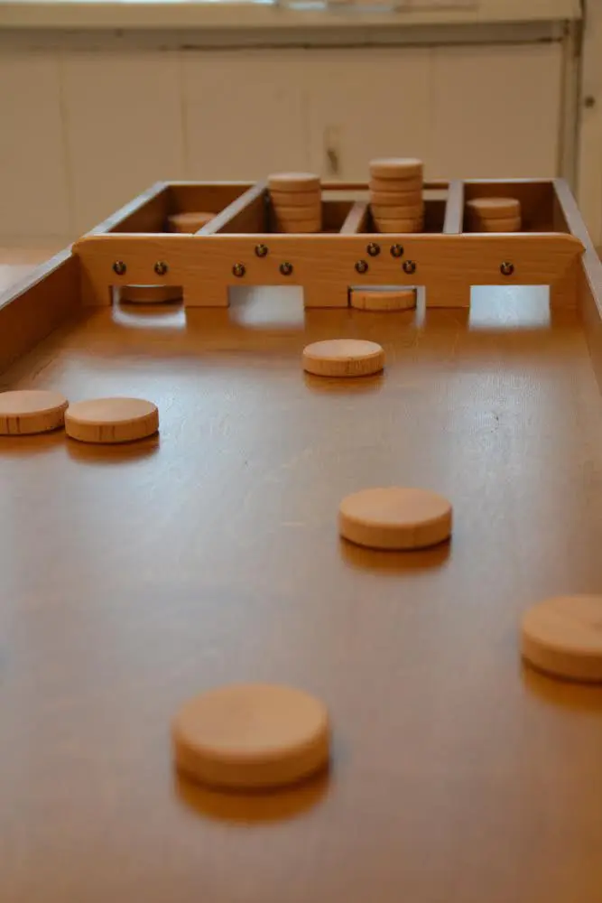 Джаколо (Jacollo)
- 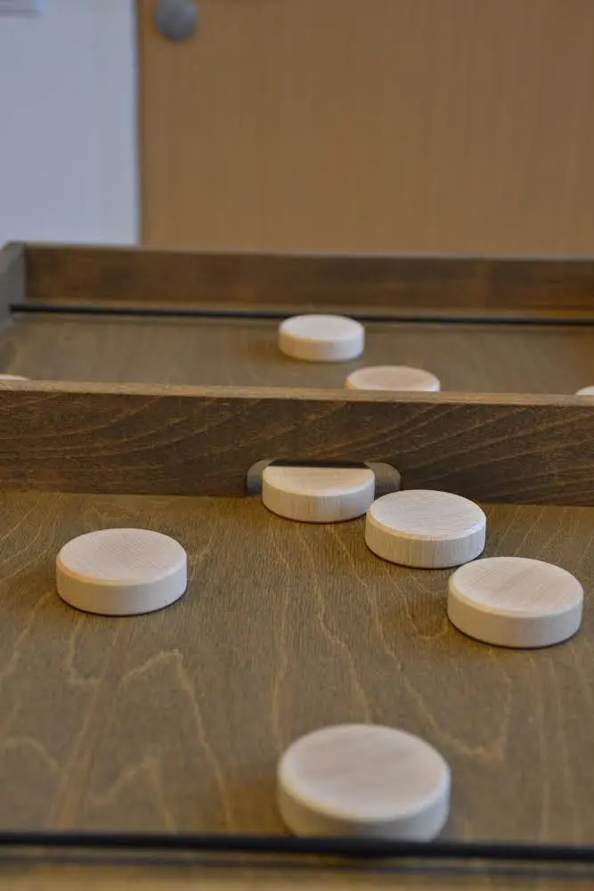 Еластік (Elastik)
- 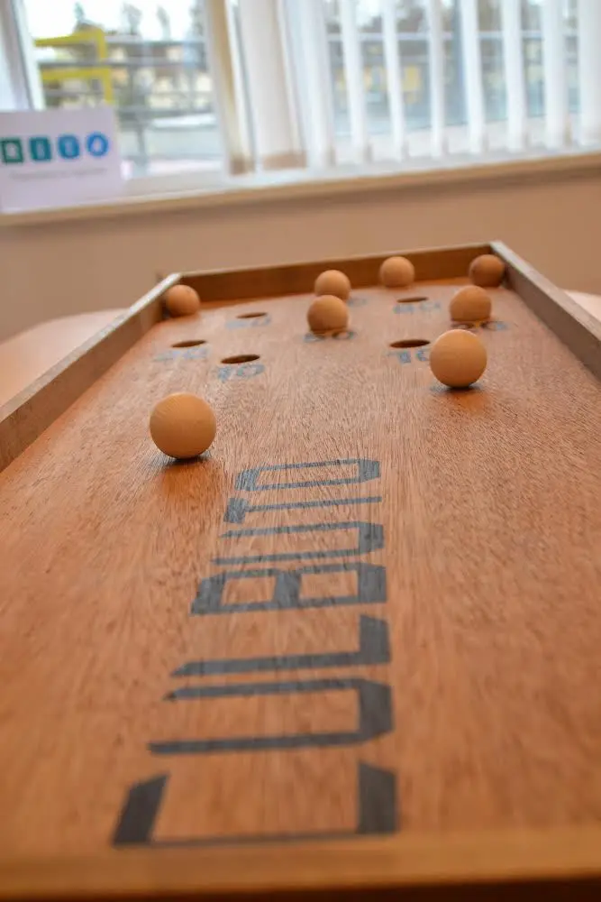 Кульбуто (Kulbutto)
- 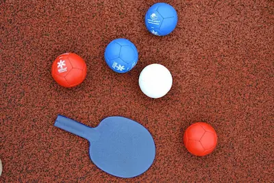 Бочча (Boccia)
- 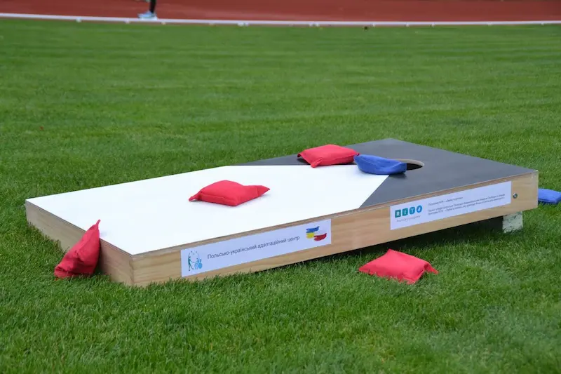 Корнхол (Cornhole)
Джаколо (Jacollo)
Гра Джаколо сприяє розвитку спритності та влучності, координації руху та кмітливості, активної діяльності дрібних м’язів та вмінню концентруватися. Гра не вимагає особливих фізичних навантажень.
Завдання гри полягає в тому, щоб на ігровому полі, обмеженому бортами, загнати 30 шайб у пронумеровані осередки, розташовані в іншому кінці поля. Джаколо гра для одного або двох гравців.
Ігровий набір складається з:- дерев’яної ігрової дошки,
- 30 дерев’яних жетонів (шайби).
Гравець має три спроби для влучання 30 шайб у будиночки через пронумеровані отвори. Кожна шайба може бути використана лише один раз за спробу. Якщо не всі шайби забиті з першої спроби, вони повторно використовуються з другої спроби, а потім в третій.
Після кожної спроби шайби в будиночках складаються так, щоб вони не заважали іншим шайбам проходити через отвір, але не більше 4 шайб в одну стопку. Якщо в одному будинку більше 4 шайб, то ті що залишилися, кладуться в другу стопку. Гра закінчується, коли кожен гравець зробить усі три спроби. Бали в іграх підраховуються відповідно до міжнародних правил Джаколло (Jakkolo).
Міжнародні правила:Кожен будинок має значення (зліва направо): перший має 2 бали, другий – 3 бали, третій – 4 бали, а четвертий – 1 бал. Якщо гравець зміг загнати шайбу в кожен будинок (тобто має мінімум по кожній шайбі в кожному будинку), то бали подвоюються.
Приклад підрахунку балів, припускаючи, що в кожному будинку є по одній шайбі: (2+3+4+1)×2=20 очок. Отже, якщо гравцеві вдається отримати по 3 шайби в кожному будинку, він отримує 3×20=60 очок. Максимум 148.
Якщо гравець забиває всі шайби з першої спроби, він отримує 2 додаткові шайби для кидка.
Якщо всі шайби забиті з другої спроби, гравець отримує одну додаткову шайбу для кидка. Тоді можлива максимальна кількість балів зростає до 152 або 156 (7×20 + 4×4 = 156). Шайби, які гравець не забиває у ворота - не приносять йому переможних балів. Для зарахування шайба повинна повністю перетнути планку.
Для перевірки перетинання шайбою межі будиночку аркуш паперу опускається вертикально з боку ігрової зони і не повинен торкатися шайби, що перевіряється. Якщо картка торкається шайби, вона не зараховується.
Шайби, які правильно пройшли крізь отвір і не повернулися назад, незалежно від їхнього положення в будиночку (вертикальне положення, по діагоналі або на дошці) забиваються і після наступної спроби складаються в стопку в будинку.
Фішка, яка відскочить і не влучить у ворота, НЕ використовується в поточному раунді, а залишається для наступного (другого чи третього раунду). Цей жетон залишається в ігровій зоні до кінця спроби, за винятком випадків, коли шайба виходить з гри або йде назад прямо до гравця, який кидає в зону для кидка (зона для кидка – це частина ігрового поля безпосередньо перед гравцем). Такий жетон слід відразу відкласти для наступної спроби.
Фішка, яка впала на іншу фішку або стоїть вертикально, не видаляється з ігрової зони до кінця спроби.
Жетони, які потрапляють у будиночок, уникаючи отвору (наприклад, зверху), повинні бути негайно забрані з ігрової зони вбік до наступної спроби, і їм не нараховуються бали.
Забороняється розміщувати жетони на поперечині в зоні кидка. Усі жетони мають бути поруч із дошкою або перед нею (включно з жетонами, які більше не беруть участь у випробуванні). Перемагає гравець, який набрав найбільшу кількість балів після виконання трьох спроб. Якщо два або більше гравців мають однакову кількість балів, учасники грають одну додаткову спробу по 4 шайби кожен, і перемагає гравець, який набрав найбільшу кількість балів у додатковому раунді (максимум 20). Якщо кількість балів у додатковій спробі рівна, гравці виконують ще одну додаткову спробу і так далі, доки одна із спроб не визначить переможця.
Еластік (Elastik)
Гра триває до виграшу двох раундів. Перед початком раунду 5 фішок розміщуються праворуч від гравця зверху вниз на дошці або складаються у вигляді трикутника посередині ігрового поля.
Якщо під час раунду фішка виходить з гри, раунд починається знову. Перемагає гравець, який першим виграє у двох раундах.
Кульбуто (Kulbutto)
Французька аркадна гра. Ігрове поле засноване на спеціальній підставці, яка дозволяє гравцеві здійснювати обертальні рухи, щоб помістити кульки в лунки.
Мета гри полягає в тому, щоб за 30 секунд помістити кульки в лунки. Перемагає гравець, який набрав найбільшу кількість балів протягом 30 секунд.
Ігровий набір складається з:- дерев’яної ігрової дошки з підставкою,
- 8 кульок.
Ігрова дошка повинна лежати на столі і спиратися на підставку. Підставка дозволяє легко обертати ігрове поле. Кульки потрібно розміщати в лунки обертальними рухами. Рухи гравця відбуваються у всіх площинах.
Відлік часу починається з моменту підняття дошки над столом. Кулі, які потрапили в борозну на полі дошки або вилетіли з дошки, більше не можуть повернутися в гру. Якщо дошка рухається або падає з основи під час гри, гра починається спочатку.
Підрахунок балів:Після кожного раунду підсумовуються бали тих лунок в яких залишились кульки. Перемагає той, хто набрав найбільшу кількість балів. Якщо рахунок рівний, гра продовжується, і якщо після 3 додаткових раундів переможця немає, починається раунд, у якому гравець повинен покласти кулі в усі лунки без обмеження часу, і перемагає найшвидший гравець.
Бочча (Boccia)
Різновидів гри Бочча досить багато, її витоки лежать в Італії, в різних країнах земної кулі правила і навіть назви гри дещо відрізняються, тому навіть в офіційних джерелах гра може називатися як Бочча, так і Бочче. Бочча внесена до переліку паралімпійських ігор для інвалідів, тому її правила були приведені до єдиного знаменника і розрізняються лише в залежності від категорій гравців.
Ігровий набір складається з:- набору м’ячів: 6 синього, 6 червоного і 1 білого кольору.
У грі можуть брати участь від двох до восьми осіб. Одна команда може складатися із чотирьох або двох осіб. У грі можуть брати участь дві команди (малий набір) або три команди (великий набір) або при об’єднанні наборів п’ять команд.
На одного гравця або одну команду виділяється шість куль одного кольору. Один гравець чи одна команда грають лише одним кольором куль.
Хід гри:Жереб визначає гравця (команду), що кидає стартову кулю (маленьку, білу). Наступним кидком гравець прагне розмістити свою кулю якомога ближче до стартового. Далі гравець кидає свою кулю з таким розрахунком, щоб її куля виявилася ближче до стартового. При цьому дозволяється вибивати кулі супротивника на дальні позиції. При грі командами спочатку кидається куля гравцем команди, яка виграла жеребкування, потім гравець наступної команди і так доти поки всі гравці у всіх командах не зроблять свій кидок. Після чого гравці визначають чиї кулі розташовуються найближче до стартового та підраховують бали.
Підрахунок балів:Найбільш близький, наприклад, куля отримує 20 очок, наступний - 19 і т.д. Максимальна вартість однієї кулі визначається кількістю куль, що беруть участь у грі. Якщо куль двадцять то й максимальна кількість очок за одну кулю дорівнюватиме двадцяти, якщо вісім куль, то вісім. Підсумовуючи бали визначають, хто з гравців набрав максимальну кількість. Цей гравець виграє партію та отримує право на перший кидок у наступній партії. Кількість партій визначають гравці.
Корнхол (Cornhole)
Корнхол – гра на точність і концентрацію уваги. На Україні це відносно новий вид спорту, а ось у світі він досить популярний, особливо в США, де нині проводяться масштабні змагання серед дорослих, дітей та людей з інвалідністю. За доступністю корнхол вважається інклюзивним видом спорту.
Завдання кожного учасника – потрапити мішечком з кукурудзи в отвір на дерев’яній поверхні. У Корнхол можна грати вдвох або вчотирьох. Гравець 1 проти гравець 2 або команда 1 проти команда 2.
Ігровий набір складається з:- дерев’яної ігрової дошки,
- 8 мішків.
Ви можете грати будь-де, єдина вимога, щоб майданчик для гри мав необхідну відстань і рівну поверхню. Залежно від складності гри, оберіть відстань, з якої ви будете кидати мішки: 8 метрів – стандартна відстань, 6 метрів – середня відстань, 4 метри – легка відстань (підійде для дітей).
Розташуйте дошку на обраній відстані і починайте гру.
Кидання мішків відбувається з відстані 6 метрів від нижнього краю дошки до лінії кидка. Гравець кидає 4 мішки. Після цього складаються бали і гравець змінюється.
Розподіл балів:- Попадання в отвір – 3 бали.
- За кожен мішок, який приземлився на дошці – 1 бал.
- Якщо мішок промине дошку, а також якщо він упаде з борту під час кидка інших мішків – 0 балів.
- Якщо мішок торкнеться підлоги або вдариться об дошку після торкання підлоги – 0 балів.
Бали підраховуються після кожного раунду (раунд – це коли гравець зробив 4 кидки). Протягом гри бали підсумовуються. Гра закінчується, коли гравець або команда набирають (або перевищують) 21 бал.
Перше місце має учасник, який набрав найшвидше 21 бал. Якщо два або більше гравців набирають 21 бал одночасно, суддя призначає додаткову спробу 4 мішки. Перемагає той, хто набере найбільшу кількість балів у додатковій спробі, при рівному результаті суддя призначає ще одну спробу, максимальна кількість додаткових спроб – 5. Якщо після п’яти спроб кількість балів однакова, суддя може призначити додаткову спробу на основі віднімання очок за 8 мішків для кожного гравця або збільшення дистанції до 8,23 м за міжнародними правилами (для людей з обмеженими можливостями ближче до 63 см, тобто 7,63 м) для 4 мішків.
Польсько-український адаптаційний центр (далі – Центр) – це місце для проведення адаптаційних ігор, спортивно-оздоровчих заходів, спортивних змагань, для розваг, відпочинку та популяризації здорового способу життя. Заняття в Центрі проводяться безкоштовно в години роботи Центру.
- Перебування в Центрі та користування обладнанням дозволяється лише в присутності та з дозволу інструктора Центру, який проводить заняття в години та дні роботи Центру. Діти до 18 років перебувають під опікою одного з батьків або законного опікуна.
- Участь у заняттях відбувається за умови підписання журналу відвідування, ознайомлення з правилами поведінки у Центрі та заповнення анкети учасника з підписанням згоди на обробку персональних даних.
- Повнолітні учасники або батьки (законні опікуни) неповнолітніх учасників несуть відповідальність за їхню безпеку під час проведення заходів. Батьки/опікуни дітей повинні знати про свою юридичну відповідальність за будь-яку шкоду, заподіяну їхніми дітьми особам або майну. Про будь-які помічені несправності, пошкодження тощо слід негайно повідомляти інструктора.
- Максимальна кількість учасників в одній групі – 30 осіб. Заняття триває 50 хвилин.
- Під час занять учасники зобов’язані виконувати вказівки інструктора та дотримуватися цих правил і Кодексу етики гравця.
- Перед початком заняття необхідно прибрати предмети, які можуть спричинити травми, і передати їх на зберігання батькам.
- Про будь-який нещасний випадок або раптове погіршення самопочуття необхідно негайно повідомити інструктору, який проводить заняття, або батькам (опікунам).
- За пошкоджене майно в залі та приміщеннях матеріальну відповідальність несуть батьки/опікуни учня або особи, які користуються послугами Центру.
- За стан обладнання ігор відповідають інструктори Центру.
- Забороняється проносити в приміщення небезпечні, гострі предмети, скляну тару, напої. До Центру не можна проносити їжу та напої.
- До занять у Центрі не допускаються особи, які перебувають у стані алкогольного чи наркотичного сп’яніння або під впливом психотропних речовин.
- Учасники Центру зобов’язані виконувати вказівки персоналу. Співробітники Центру можуть відмовити учаснику в прийомі або скоротити термін його перебування, якщо він/вона своєю поведінкою або одягом наражає на небезпеку інших учасників.
- Я поводитимусь шанобливо та дотримуватимусь правил ЧЕСНОЇ ГРИ під час та після змагань.
- Я ніколи свідомо не порушу жодного правила, якщо порушу, я буду знати про порушення. Я не вживатиму жодних дій, які можуть бути розцінені як спроба залякати чи принизити моїх суперників, моїх товаришів по команді чи суддю.
- Я буду неупереджено дотримуватись правил, завжди розуміючи їхню мету, і буду дбати про організовану та чесну гру.
- Якщо я порушу кодекс етики або правила гри, я беззастережно прийму будь-яке покарання, яке суддя, у всіх спортивних випадках, вважатиме належним.
- Не можна штовхати інших.
- Не можна виносити або пересувати обладнання.
- Не можна приносити до Центру власні іграшки чи інші предмети.
- Не можна приносити з собою їжу або напої.
- Заборонено вживати солодощі, їжу та напої під час занять з обладнанням.
- Заборонено сперечатися, битися, лаятися.
- У разі недотримання правил учасник несе відповідальність згідно з цими правилами та відповідними юридичними документами.
- 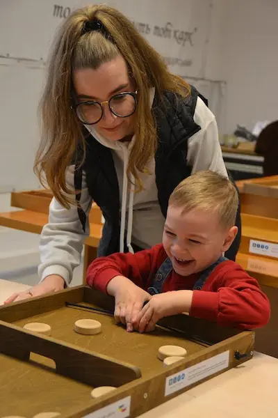
- 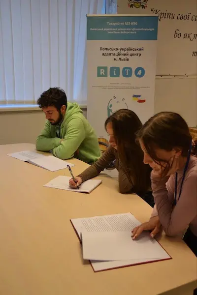
- 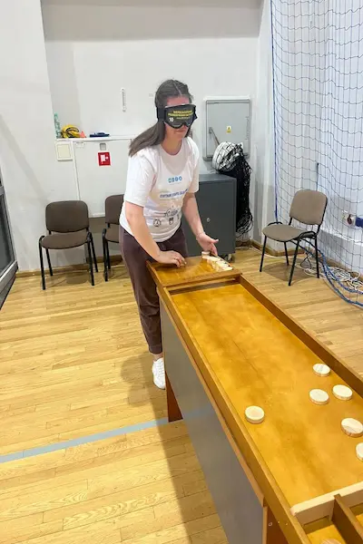
- 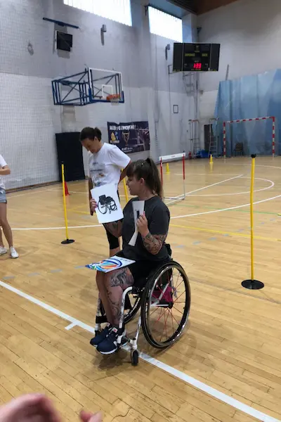
- 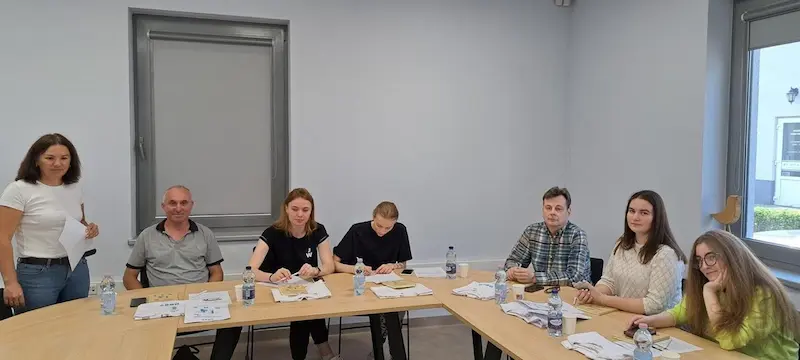
- 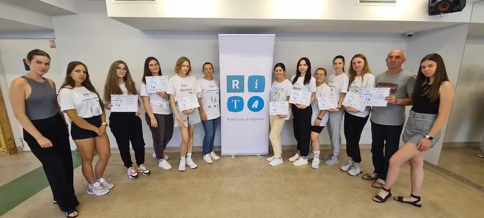
- 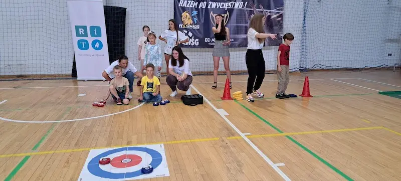
- 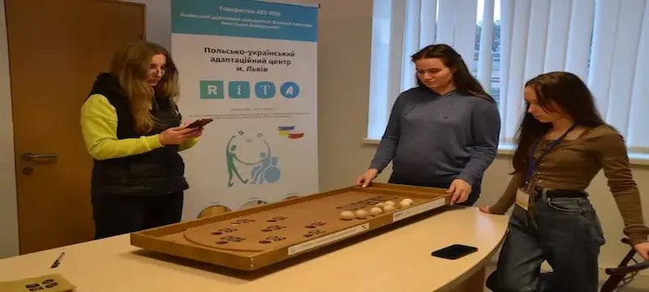